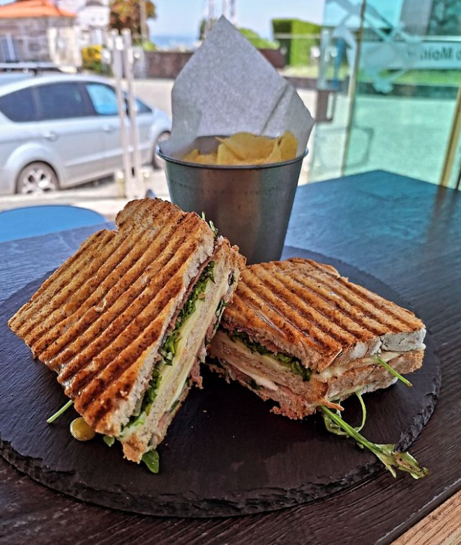

Descrição
A Tosta Mista Especial é preparada com pão crocante, presunto artesanal e queijo derretido, servida com um toque de orégano e azeite. Ideal para um lanche rápido e saboroso.
Ingredientes
- Pão de forma artesanal
- Queijo mussarela
- Presunto defumado
- Orégano e azeite extra virgem
- Rúcula
Preço
5,00 €
Voltar ao Menu